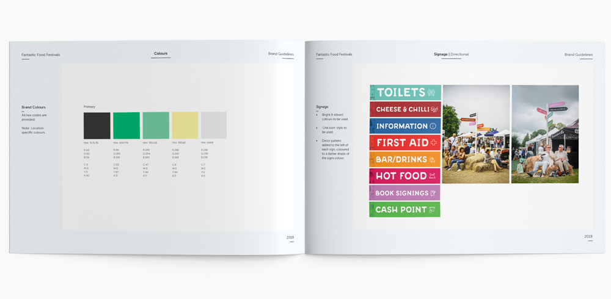

Working with Fantastic Food Festivals
We’ve been with FFF since the beginning, back when these festivals were just an idea. Today, these Food Festivals have grown to be wildly popular and are all around the south of England, attracting thousands and thousands of foodies from across the country.
Sometimes case studies aren’t enough to convey the whole depths of an on-going project. Read our in-depth article 'Working with Fantastic British Food Festivals' to get a glimpse into our working relationship.